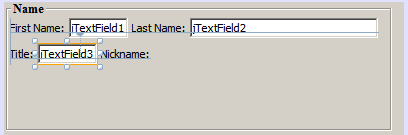

Apache NetBeans
Apache NetBeansLatest release
在 NetBeans IDE 中设计 Swing GUI
| This tutorial needs a review. You can open a JIRA issue, or edit it in GitHub following these contribution guidelines. |

Figure 1. 此页上的内容适用于 NetBeans IDE 6.9 及更高版本
本教程将指导您完成使用 NetBeans IDE GUI 构建器为一个名为 ContactEditor 的应用程序创建图形用户界面 (GUI) 的过程。在该过程中，您将布置一个 GUI 前端，以便查看和编辑员工数据库中包括的各个员工的联系信息。
在本教程中，您将学习如何：使用 GUI 构建器界面；创建 GUI 容器；添加和对齐组件并调整其大小；调整组件锚点；设置组件自动调整大小行为；编辑组件属性。
学完本教程大约需要 30 分钟。
要学完本教程，您需要具备以下软件和资源。
软件或资源要求的版本
NetBeans IDE版本 6.9 及更高版本
Java 开发工具包 (JDK)版本 6、7 或 8
入门指南
使用 IDE 的 GUI 构建器，用户无需深入了解布局管理器，便可以构建具有专业外观的 GUI。只需将组件置于所需的位置，即可设置窗体布局。
有关 GUI 构建器可视反馈的描述，可参见 GUI 构建器可视反馈图例。
创建项目
由于 IDE 中的所有 Java 开发都是在项目内进行的，因此我们首先需要新建一个用来存储源文件及其他项目文件的 ContactEditor 项目。IDE 项目是一组 Java 源文件，外加与其关联的元数据，其中包括特定于项目的属性文件、控制构建和运行设置的 Ant 构建脚本以及一个将 Ant 目标映射到 IDE 命令的 project.xml 文件。尽管 Java 应用程序通常包括几个 IDE 项目，但是，在本教程中，我们将构建一个完全存储在单个项目中的简单应用程序。
要创建新的 ContactEditor 应用程序项目，请执行以下操作：
-
选择“文件”>“新建项目”。或者，也可以单击 IDE 工具栏中的“新建项目”图标。
-
在“类别”窗格中选择 "Java" 节点，在“项目”窗格中选择“Java 应用程序”。单击“下一步”。
-
在“项目名称”字段中输入
ContactEditor，然后指定项目位置。 -
将“使用专用文件夹存储库”复选框保留为取消选中状态。
-
确保“设置为主项目”复选框处于选中状态，并清除“创建主类”字段。
-
单击“完成”。
IDE 在系统上的指定位置创建 ContactEditor 文件夹。此文件夹包含项目的所有关联文件，其中包括其 Ant 脚本、用于存储源文件和测试的文件夹以及用于存储特定于项目的元数据的文件夹。要查看项目结构，请使用 IDE 的“文件”窗口。
创建 JFrame 容器
创建新应用程序后，您可能已注意到“项目”窗口中的“源包”文件夹包含一个空的 <默认包> 节点。要继续构建界面，我们需要创建一个 Java 容器，以便放置所需的其他 GUI 组件。在此步骤中，我们将使用 JFrame 组件创建一个容器，并将该容器置于一个新包中。
要添加 JFrame 容器，请执行以下操作：
-
在“项目”窗口中，右键单击
ContactEditor节点，然后选择“新建”>“JFrame 窗体”。 此外，也可以选择“新建”>“其他”>“Swing GUI 窗体”>“JFrame 窗体”以查找 JFrame 窗体。-
输入
ContactEditorUI作为类名。 -
在“包”中输入
my.contacteditor。 -
单击“完成”。
-
IDE 在 ContactEditorUI.java 应用程序内创建 ContactEditorUI 窗体和 ContactEditorUI 类，并在 GUI 构建器中打开 ContactEditorUI 窗体。请注意， my.contacteditor 包取代了默认包。
熟悉 GUI 构建器
现在，我们已为应用程序设置了一个新的项目，接下来让我们再花点时间来熟悉 GUI 构建器的界面。
*注：*要通过交互式演示了解 GUI 构建器界面，请观看了解 GUI 构建器 (.swf) 截屏视频。
添加了 JFrame 容器后，IDE 会在一个 "Editor"（编辑器）标签中打开新创建的 ContactEditorUI 窗体，该标签具有一个包含几个按钮的工具栏，如上图所示。ContactEditor 窗体在 GUI 构建器的 "Design"（设计）视图中打开，并沿 IDE 的边缘自动出现三个其他窗口；利用这些窗口，可以在构建 GUI 窗体时导航、组织和编辑这些窗体。
GUI 构建器的各个窗口包括：
-
设计区域。用于创建和编辑 Java GUI 窗体的 GUI 构建器主窗口。在该工具栏中，"Source"（源）按钮用于查看类的源代码，"Design"（设计）按钮用于查看 GUI 组件的图形视图，而 "History"（历史记录）按钮用于访问文件更改的本地历史记录。使用其他工具栏按钮可以方便地访问常用命令，例如，在选择模式和连接模式之间切换、对齐组件、设置自动调整组件大小行为以及预览窗体。
-
*导航器。*在应用程序中以树状分层结构提供所有组件（包括可视和非可视）的表示形式。"Navigator"（导航器）还提供有关树中哪个组件当前正在 GUI 构建器中进行编辑的可视反馈，并允许您在可用面板中组织这些组件。
-
组件面板。可用组件的可定制列表，包含 JFC/Swing、AWT 和 JavaBeans 组件的标签以及布局管理器。此外，您也可以使用定制器在 "Palette"（组件面板）中创建类别以及删除和重新排列其中显示的类别。
-
属性窗口。显示 GUI 构建器、"Navigator"（导航器）窗口、"Projects"（项目）窗口或 "Files"（文件）窗口中当前所选组件的属性。
如果单击 "Source"（源）按钮，IDE 将在编辑器中显示应用程序的 Java 源代码，其中包括由 GUI 构建器自动构建的代码部分，这些部分将以灰色区域表示（选中时变为蓝色），称为“保护块”。保护块是 "Source"（源）视图中不可编辑的受保护区域。当处于 "Source"（源）视图中时，只能编辑显示在编辑器白色区域中的代码。如果需要更改保护块内的代码，请单击 "Design"（设计）按钮从 IDE 的编辑器返回至 GUI 构建器，以便对窗体进行必要的调整。保存所做的更改时，IDE 会更新文件的源代码。
*注：*还有一个供高级开发者使用的 "Palette Manager"（组件面板管理器），使用该管理器可以将 JAR、库或其他项目中的定制组件添加到 "Palette"（组件面板）中。要通过组件面板管理器添加定制组件，请选择 "Tools"（工具）> "Palette"（组件面板）> "Swing/AWT Components"（Swing/AWT 组件）。
主要概念
通过简化创建图形界面的工作流，IDE 的 GUI 构建器解决了创建 Java GUI 的核心问题，从而使开发者不必再使用复杂的 Swing 布局管理器。这一点是通过扩展目前的 NetBeans IDE GUI 构建器功能以支持直观的“自由设计”模式（具有易于理解和使用的简单布局规则）来实现的。设置窗体布局时，GUI 构建器将提供可视基准线，用于建议最佳组件间距和对齐方式。在后台，GUI 构建器会将您的设计理念转化为使用新的 GroupLayout 布局管理器和其他 Swing 结构实现的功能性 UI。由于它使用动态布局模型，因此使用 GUI 构建器构建的 GUI 在运行时将按预期方式工作，同时会在不改变组件之间的定义关系的情况下进行相应的调整以适应所做的任何更改。只要您调整窗体大小、转换语言环境或指定不同的外观，GUI 就会根据目标外观的插入和偏移量自动进行调整。
自由设计
在 IDE 的 GUI 构建器中，只需像使用绝对定位那样将组件放在所需的位置，便可以构建窗体。GUI 构建器将确定需要哪些布局属性，然后自动构建代码。您无需关注插入量、锚点以及填充之类的问题。
自动组件定位（对齐放置）
将组件添加到窗体时，GUI 构建器将提供可视反馈，协助您根据操作系统的外观来定位组件。GUI 构建器针对组件应在窗体中放置的位置提供一些有帮助的内联提示和其他可视反馈，并自动使组件沿基准线对齐。它根据已放在窗体中的组件的位置提出这些建议，同时使填充仍保持灵活性，以便在运行时能够正确地呈现不同的目标外观。
可视反馈
GUI 构建器还提供有关组件锚点和链接关系的可视反馈。通过这些指示符，可以快速识别各种定位关系和组件锁定行为，这些关系和行为将影响 GUI 在运行时的显示和行为方式。这加快了 GUI 的设计过程，使您能够快速创建具有专业外观和相应功能的可视界面。
先打基础
现在，您已熟悉了 GUI 构建器的界面，接下来该着手开发 ContactEditor 应用程序的 UI 了。在此部分，我们将介绍如何使用 IDE 的组件面板将所需的各种 GUI 组件添加到窗体中。
有了 IDE 的“自由设计”模式，您将不必再费力地使用布局管理器来控制容器内组件的大小和位置。只需将所需的组件拖放至 GUI 窗体中，如下面提供的各图所示。
*注：*有关以下部分的交互式演示，请观看添加单个和多个组件 (.swf) 截屏视频。
添加组件：基础
尽管 IDE 的 GUI 构建器简化了创建 Java GUI 的过程，但是在开始布局之前大体设计出界面的外观通常还是会很有帮助的。许多界面设计者将此视为一种“最佳做法”技术，但对本教程来说，只需跳转至后面的预览 GUI 部分，浏览一下最终窗体应具有的外观即可。
由于我们已经将 JFrame 添加为窗体的顶层容器，因此下一步需要添加几个 JPanel，以便使用带标题的边框将 UI 的多个组件归到其中。请参见以下各图，并注意在完成此操作时 IDE 的“拖放”行为。
添加 JPanel：
-
在 "Palette"（组件面板）窗口中，通过单击并松开鼠标按钮，从 "Swing Containers"（Swing 容器）类别中选择 "Panel"（面板）组件。
-
将光标移到 GUI 构建器中窗体的左上角。当组件的位置靠近容器的左上边缘时，将出现指示首选边距的水平和垂直对齐基准线。在窗体中单击，将 JPanel 放在此位置上。
``JPanel`` 组件出现在 ``ContactEditorUI`` 窗体中，并以橙色突出显示，表示它已选中。在松开鼠标按钮后，将出现小指示符来显示组件的锚点关系，并在 "Navigator"（导航器）窗口中显示相应的 JPanel 节点，如下图所示。

接下来，需要调整 JPanel 的大小，为稍后在其中放置的组件留出空间，在此我们需要先花一些时间了解 GUI 构建器的另一个可视化功能。要执行此操作，我们需要取消选中刚添加的 JPanel。由于尚未添加标题边框，因此将看不到该面板。不过请注意，当将光标移动到 JPanel 上时，其边缘会变为浅灰色，这样便可以清楚地看见它的位置。只需单击该组件内的任意位置，便可以重新选中它，并且将会再次出现大小调整控柄和锚点指示符。
调整 JPanel 的大小：
-
选中刚刚添加的 JPanel。小的方形大小调整控柄将会再次出现在组件周围。
-
单击并按住 JPanel 右边缘上的大小调整控柄，然后拖动直到靠近窗体边缘处出现对齐基准虚线。
-
松开大小调整控柄以调整组件大小。
按照建议的偏移将 JPanel 组件延伸至容器的左边距和右边距，如下图所示。
至此，我们已添加了用于容纳 UI 名称信息的面板，接下来需要重复该过程来添加另一个面板，它位于第一个面板正下方，用于容纳电子邮件信息。请参见以下各图再次执行前面的两个任务，同时注意 GUI 构建器的建议位置。请注意，建议的两个 JPanel 之间的垂直间距要比边缘处的间距小得多。添加了第二个 JPanel 后，调整其大小，使它充满窗体的其余垂直空间。


由于我们需要在外观上区分出 GUI 上半部分和下半部分的功能，因此需要为每个 JPanel 添加边框和标题。我们将首先使用 "Properties"（属性）窗口完成此操作，然后将尝试使用弹出式菜单完成此操作。
将标题边框添加到 JPanel 中：
-
选择 GUI 构建器中的顶部 JPanel。
-
在 "Properties"（属性）窗口中，单击 "border" 属性旁边的省略号按钮 (…)。
-
在出现的 JPanel 边框编辑器中，选择 "Available Borders"（可用边框）窗格中的 "TitledBorder"（带标题的边框）节点。
-
在位于下方的 "Properties"（属性）窗格中，为 "Title"（标题）属性输入
Name。 -
单击 "Font"（字体）属性旁边的省略号 (…)，然后为 "Font Style"（字体样式）选择 "Bold"（粗体），为 "Size"（大小）输入 12。单击 "OK"（确定）退出对话框。
-
选择底部 JPanel 并重复步骤 2 至 5，但此次需要右键单击 JPanel，然后使用弹出式菜单访问 "Properties"（属性）窗口。为 "Title"（标题）属性输入
E-mail。
带标题的边框将添加到两个 JPanel 组件中。

将单个组件添加到窗体
现在，我们需要着手添加一些组件，它们实际上将提供联系人列表中的联系人信息。在此任务中，我们将添加四个显示联系人信息的 JTextField 以及描述它们的 JLabel。执行此任务时，请注意 GUI 构建器显示的水平和垂直基准线，它们用于根据操作系统外观所定义的间距来建议首选组件间距。这可确保在运行时自动呈现与目标操作系统的外观一致的 GUI。
将 JLabel 添加到窗体中：
-
在 "Palette"（组件面板）窗口中，从 "Swing Controls"（Swing 控件）类别中选择 "Label"（标签）组件。
-
将光标移到先前添加的
NameJPanel 上。当出现基准线指示 JLabel 位于 JPanel 的左上角（此时与上边缘和左边缘之间存在较小的边距）时，请单击鼠标以放置此标签。
JLabel 将添加到窗体中，并且 "Inspector"（检查器）窗口中将添加表示该组件的相应节点。
在继续操作之前，我们需要编辑刚添加的 JLabel 的显示文本。尽管可以在任何时候编辑组件显示文本，但最简便的方法是在添加它们时进行编辑。
编辑 JLabel 的显示文本：
-
双击 JLabel 以选中其显示文本。
-
键入
First Name:，然后按 Enter 键。
将显示 JLabel 的新名称，并且组件的宽度会随着编辑的内容进行相应地调整。
接下来，我们将添加 JTextField，以便大致了解 GUI 构建器的基线对齐功能。
将 JTextField 添加到窗体中：
-
在 "Palette"（组件面板）窗口中，从 "Swing Controls"（Swing 控件）类别中选择 "Text Field"（文本字段）组件。
-
将光标移到紧靠刚添加的
First Name:JLabel 右侧的位置。当出现水平基准线指示 JTextField 的基线与 JLabel 的基线对齐，并且以垂直基准线给出两个组件之间的建议间距时，请单击鼠标以放置 JTextField。
JTextField 将与窗体中 JLabel 的基线对齐，如下图所示。请注意，JLabel 略微向下进行了移动，以便与较高的文本字段的基线对齐。同以前一样，"Navigator"（导航器）窗口中将添加表示该组件的节点。

在继续操作之前，我们需要在刚添加的两个组件的右侧紧接着再添加一个 JLabel 和一个 JTextField，如下图所示。这次输入 Last Name: 作为 JLabel 的显示文本，并暂时将 JTextField 的占位符文本保留原样。

调整 JTextField 的大小：
-
选中刚添加到
Last Name:JLabel 右侧的 JTextField。 -
将 JTextField 右边缘的大小调整控柄向封闭 JPanel 的右边缘拖动。
-
当出现垂直对齐基准线以给出文本字段与 JPanel 右边缘之间的建议边距时，请松开鼠标按钮以调整 JTextField 的大小。
JTextField 的右边缘将与 JPanel 的边缘对齐，并留出建议的边缘边距，如下图所示。

将多个组件添加到窗体
现在，我们将添加 Title: 和 Nickname: JLabel，它们用于描述我们将在稍后添加的两个 JTextField。我们将在按住 Shift 键的同时拖放组件，以便将它们快速添加到窗体中。执行此任务时，同样请注意 GUI 构建器显示的用于建议首选组件间距的水平和垂直基准线。
将多个 JLabel 添加到窗体中：
-
在 "Palette"（组件面板）窗口中，通过单击并松开鼠标按钮，从 "Swing Controls"（Swing 控件）类别中选择 "Label"（标签）组件。
-
将光标移到先前在窗体中添加的
First Name:JLabel 的正下方。当出现基准线指示新 JLabel 的左边缘与上方 JLabel 的左边缘对齐，并且它们之间存在较小边距时，请按住 Shift 键单击鼠标以放置第一个 JLabel。 -
继续按住 Shift 键的同时，在紧邻第一个 JLabel 的右侧放置另一个 JLabel。确保在放置第二个 JLabel 前松开 Shift 键。如果在放置最后一个 JLabel 前忘记松开 Shift 键，只需按 Esc 键即可。
JLabel 将添加到窗体中，从而创建第二行组件，如下图所示。"Navigator"（导航器）窗口中将添加表示每个组件的节点。

在继续操作之前，我们需要编辑 JLabel 的名称，以便能够看到将在以后设置的对齐效果。
编辑 JLabel 的显示文本：
-
双击第一个 JLabel 以选中其显示文本。
-
键入
Title:，然后按 Enter 键。 -
重复步骤 1 和 2，为第二个 JLabel 的名称属性输入
Nickname:。
JLabel 的新名称将显示在窗体中，并且它们会随着编辑内容的加宽而发生位移，如下图所示。

插入组件
*注：*有关以下部分的交互式演示，请观看插入组件 (.swf) 截屏视频。
通常，需要在窗体中已放置的组件之间添加组件。只要在两个现有组件之间添加组件，GUI 构建器就会自动移动它们，以便为新组件留出空间。为了对此进行演示，我们将在先前添加的两个 JLabel 之间插入一个 JTextField，如下面的两幅图所示。
在两个 JLabel 之间插入 JTextField：
-
在 "Palette"（组件面板）窗口中，从 "Swing Controls"（Swing 控件）类别中选择 "Text Field"（文本字段）组件。
-
将光标移到位于第二行的
Title:和Nickname:JLabel 上，使 JTextField 与两者都重叠，并与它们的基线对齐。如果在放置新文本字段时遇到困难，可以将其与NicknameJLabel 的左基准线对齐，如下面的第一幅图所示。 -
单击鼠标以将 JTextField 放置在
Title:和Nickname:JLabel 之间。
JTextField 在两个 JLabel 之间对齐放置。最右侧的 JLabel 会向 JTextField 的右侧移动，以适应建议的水平偏移。


我们仍需要将另外一个 JTextField 添加到窗体中，它将在窗体的右侧显示每个联系人的昵称。
添加 JTextField：
-
在 "Palette"（组件面板）窗口中，从 Swing 类别中选择 "Text Field"（文本字段）组件。
-
将光标移到
Nickname标签的右侧，然后单击鼠标以放置该文本字段。
JTextField 在其左侧的 JLabel 旁边对齐放置。
调整 JTextField 的大小：
-
将在先前任务中添加的
Nickname:标签的 JTextField 大小调整控柄向封闭 JPanel 的右侧拖动。 -
当出现垂直对齐基准线以给出文本字段与 JPanel 边缘之间的建议边距时，请松开鼠标按钮以调整 JTextField 的大小。
JTextField 的右边缘将与 JPanel 的边缘对齐，并留出建议的边缘边距；同时，GUI 构建器会推断出合适的大小调整行为。
-
按 Ctrl-S 组合键保存该文件。
更进一步
对齐是创建具有专业外观的 GUI 的一个最基本方面。在上一部分中，我们通过将 JLabel 和 JTextField 组件添加到 ContactEditorUI 窗体中，大致了解了 IDE 的对齐功能。接下来，我们将在使用应用程序所需的其他各种组件的过程中更深入地了解 GUI 构建器的对齐功能。
组件对齐
*注：*有关以下部分的交互式演示，请观看对齐和锚定组件 (.swf) 截屏视频。
每次将组件添加到窗体中时，GUI 构建器都会有效地将它们对齐，出现的对齐基准线可以证明这一点。但是，有时也需要在组件组之间指定不同的关系。先前我们添加了四个 ContactEditor GUI 所需的 JLabel，但并未将它们对齐。现在，我们将对齐两列 JLabel，以使它们的右边缘排列整齐。
对齐组件：
-
按住
Ctrl键，然后单击以选择窗体左侧的First Name:和Title:JLabel。 -
单击工具栏中的 "Align Right in Column"（列向右对齐）按钮 (
 )。或者，也可以右键单击其中任一组件，然后从弹出式菜单中选择 "Align"（对齐）> "Right"（列右侧）。
)。或者，也可以右键单击其中任一组件，然后从弹出式菜单中选择 "Align"（对齐）> "Right"（列右侧）。 -
对
Last Name:和Nickname:JLabel 也重复此操作。
JLabel 的位置将会移动，以使它们的显示文本的右边缘对齐。同时，也会更新锚点关系，指示组件已分组。
在结束先前添加的 JTextField 的操作之前，我们需要确保 JLabel 之间插入的两个 JTextField 设置为可正确调整大小。与拉伸到窗体右边缘的两个 JTextField 不同，所插入组件的大小可调性不是自动设置的。
设置调整组件大小行为：
-
按住 Ctrl 键单击两个插入的 JTextField 组件，以便在 GUI 构建器中将它们选中。
-
在同时选中这两个 JTextField 的情况下，右键单击其中的任何一个，然后从弹出式菜单中选择 "Auto Resizing"（自动调整大小）> "Horizontal"（水平）。
JTextField 将被设置为在运行时水平调整大小。同时，也会更新对齐基准线和锚点指示符，以提供组件关系的可视反馈。
将组件设置为相同大小：
-
按住 Ctrl 键单击窗体中的所有四个 JTextField 以将它们选中。
-
在选中了这些 JTextField 的情况下，右键单击其中任何一个，然后从弹出式菜单中选择 "Set Same Size"（设置相同大小）> "Same Width"（相同宽度）。
这些 JTextField 均会设置为相同的宽度，并且每个 JTextField 的上边缘都将添加指示符，以提供组件关系的可视反馈。
现在，我们需要添加另一个描述 JComboBox 的 JLabel，用户可以使用该 JComboBox 来选择 ContactEditor 应用程序将显示的信息格式。
将 JLabel 与组件组对齐：
-
在 "Palette"（组件面板）窗口中，从 Swing 类别中选择 "Label"（标签）组件。
-
将光标移到 JPanel 左侧的
First Name和TitleJLabel 下方。当出现基准线指示新 JLabel 的右边缘与上方组件组（两个 JLabel）的右边缘对齐时，请单击鼠标以放置该组件。
该 JLabel 将与上方的 JLabel 列右侧对齐，如下图所示。GUI 构建器将更新指示组件间距和锚点关系的对齐状态线。

与在先前的示例中一样，双击该 JLabel 以选中其显示文本，然后输入 Display Format: 作为显示名称。请注意，当该 JLabel 对齐放置时，其他组件将发生位移以适应较长的显示文本。
基线对齐
每当添加或移动包含文本的组件（JLabel、JTextField 等）时，IDE 就会提供对齐建议，这些建议基于组件中文本的基线。例如，先前插入 JTextField 时，其基线会自动与相邻的 JLabel 对齐。
现在，我们将添加一个组合框，用户可以使用它来选择 ContactEditor 应用程序将显示的信息格式。在添加 JComboBox 时，我们会将其基线与 JLabel 文本的基线对齐。请再次注意为帮助定位而出现的基线对齐基准线。
对齐组件的基线：
-
在 "Palette"（组件面板）窗口中，从 "Swing Controls"（Swing 控件）类别中选择 "Combo Box"（组合框）组件。
-
将光标移到紧靠刚添加的 JLabel 右侧的位置。当出现水平基准线指示 JComboBox 的基线与 JLabel 中文本的基线对齐，并且以垂直基准线给出两个组件之间的建议间距时，请单击鼠标以放置该组合框。
该组件将与其左侧的 JLabel 中的文本的基线对齐，如下图所示。GUI 构建器将显示指示组件间距和锚点关系的状态线。

调整 JComboBox 的大小：
-
选中 GUI 构建器中的 ComboBox。
-
将 JComboBox 右边缘上的大小调整控柄向右侧拖动，直到出现对齐基准线以给出 JComboBox 和 JPanel 边缘之间的建议首选偏移。
如下图所示，JComboBox 的右边缘将与 JPanel 的边缘对齐，并留出建议的边缘边距；同时，组件的宽度会自动设置为随窗体调整大小。

-
按 Ctrl-S 组合键保存该文件。
编辑组件模型不在本教程的涉及范围内，因此我们将暂时保留 JComboBox 的占位符项列表的原样。
回顾所学内容
我们已经出色地完成了构建 ContactEditor GUI 的过程，现在我们需要花几分钟再添加几个界面所需的组件来重温学过的内容。
到目前为止，我们一直在介绍如何将组件添加到 ContactEditor GUI 中，并使用 IDE 的对齐基准线来帮助定位。但还有另一个重要方面，就是了解如何在组件放置过程中使用锚点。尽管我们尚未讨论它，但您已经利用了此功能，只是没有意识到。如前面所提到的，只要将组件添加到窗体中，IDE 就会通过基准线给出建议的目标外观首选位置。在放置新组件的同时，会将该组件锚定在最近的容器边缘或组件上，以确保在运行时保持组件关系。在此部分，我们将重点介绍如何以更简化的方式完成这些任务，同时指出 GUI 构建器在后台执行的工作。
添加、对齐和锚定
在 GUI 构建器中，可以通过简化典型工作流操作来快捷、轻松地设置窗体布局。只要将组件添加到窗体中，GUI 构建器就会自动将组件对齐放置到首选位置并设置所需的链接关系，以便您可以专注于设计窗体，而不必疲于应付复杂的实现细节。
添加并对齐 JLabel 以及编辑其显示文本：
-
在 "Palette"（组件面板）窗口中，从 "Swing Controls"（Swing 控件）类别中选择 "Label"（标签）组件。
-
将光标移到窗体底部 JPanel 的 E-mail 标题的正下方。当出现基准线指示该标签位于 JPanel 的左上角（此时与上边缘和左边缘之间存在较小的边距）时，请单击鼠标以放置 JLabel。
-
双击 JLabel 以选中其显示文本。然后，键入
E-mail Address:并按 Enter 键。
JLabel 将对齐放置到窗体中的首选位置，并且锚定在封闭 JPanel 的上边缘和左边缘。同以前一样，"Navigator"（导航器）窗口中将添加表示该组件的相应节点。
添加 JTextField：
-
在 "Palette"（组件面板）窗口中，从 "Swing Controls"（Swing 控件）类别中选择 "Text Field"（文本字段）组件。
-
将光标移到紧靠刚添加的
E-mail Address标签右侧的位置。当出现基准线指示 JTextField 的基线与 JLabel 中文本的基线对齐，并且以垂直基准线给出两个组件之间的建议边距时，请单击鼠标以放置该文本字段。
JTextField 在 E-mail Address: JLabel 的右侧对齐放置并链接到该 JLabel。"Inspector"（检查器）窗口中也将添加与其对应的节点。
-
将 JTextField 的大小调整控柄向封闭 JPanel 的右侧拖动，直到出现对齐基准线以给出 JTextField 和 JPanel 边缘之间的建议偏移。
JTextField 的右边缘将与指示首选边距的对齐基准线对齐。
现在，我们需要添加 JList，它将用于显示 ContactEditor 的整个联系人列表。
添加 JList 并调整其大小：
-
在 "Palette"（组件面板）窗口中，从 "Swing Controls"（Swing 控件）类别中选择 "List"（列表）组件。
-
将光标移到先前添加的
E-mail AddressJLabel 的正下方。当出现基准线指示 JList 的左边缘和上边缘分别与 JPanel 的左边缘和上方的 JLabel 对齐（留出首选边距）时，请单击鼠标以放置 JList。 -
将 JList 的右侧大小调整控柄向封闭 JPanel 的右侧拖动，直到出现对齐基准线以指示其宽度与上方 JTextField 的宽度相同。
JList 在对齐基准线指定的位置对齐放置，并且 "Inspector"（检查器）窗口中显示与其对应的节点。另请注意，窗体将会扩展以适应新添加的 JList。

由于 JList 用于显示较长的数据列表，因此通常需要添加 JScrollPane。只要添加了需要 JScrollPane 的组件，GUI 构建器就会自动为您添加 JScrollPane。因为 JScrollPane 是非可视组件，所以必须使用 "Inspector"（检查器）窗口才能查看或编辑 GUI 构建器创建的任何 JScrollPane。
调整组件大小
*注：*有关以下部分的交互式演示，请观看缩进组件并调整其大小 (.swf) 截屏视频。
通常，将几个相关组件（如模态对话框中的按钮）设置为相同大小对保持外观一致性很有好处。为演示此操作，我们将在 ContactEditor 窗体中添加四个 JButton，这些按钮用于添加、编辑和删除联系人列表中的各个条目，如以下各图所示。之后，我们将四个按钮设置为相同大小，以便能够容易地识别出它们在提供相关的功能。
添加并对齐多个按钮以及编辑其显示文本：
-
在 "Palette"（组件面板）窗口中，从 "Swing Controls"（Swing 控件）类别中选择 "Button"（按钮）组件。
-
将 JButton 移到底部 JPanel 中
E-mail AddressJTextField 的右边缘。当出现基准线指示 JButton 的基线和右边缘与 JTextField 的基线和右边缘对齐时，请按住 Shift 键单击鼠标，从而沿 JFrame 的右边缘放置第一个按钮。在松开鼠标按钮时，JTextField 的宽度会缩减以容纳 JButton。


-
将光标移到底部 JPanel 中 JList 的右上角。当出现基准线指示 JButton 的上边缘和右边缘与 JList 的上边缘和右边缘对齐时，请按住 Shift 键单击鼠标，从而沿 JFrame 的右边缘放置第二个按钮。
-
在已添加的两个 JButton 的下方再添加两个 JButton，以创建一个列。请确保按照建议的间距放置 JButton 并保持间距的一致性。如果在放置最后一个 JButton 前忘记松开 Shift 键，只需按 Esc 键即可。

-
设置每个 JButton 的显示文本。（可以通过右键单击按钮并选择 "Edit Text"（编辑文本）来编辑按钮的文本。或者，也可以单击按钮，稍等片刻，然后再次单击按钮。）为最上面的按钮输入
Add，为第二个按钮输入Edit，为第三个按钮输入Remove，为第四个按钮输入As Default。
JButton 组件在对齐基准线指定的位置对齐放置。按钮的宽度将会更改以适应新名称。

现在，已将按钮放置在所需的位置，接下来，我们要将四个按钮设置为相同的大小以保持外观一致性，同时表明它们在功能上是彼此相关的。
将组件设置为相同大小：
-
通过按住 Ctrl 键进行选择，选中所有四个 JButton。
-
右键单击其中一个 JButton，然后从弹出式菜单中选择 "Same Size"（相同大小）> "Same Width"（相同宽度）。
JButton 的大小将被设置为与名称最长的按钮的大小相同。

缩进
通常，需要将多个组件归到另一个组件下，以表明它们属于一个相关功能组。一个典型的例子是，在同一标签下放置几个相关的复选框。利用 GUI 构建器中提供的专用基准线（针对操作系统外观给出首选偏移建议），可以轻松完成缩进。
在此部分，我们将在一个 JLabel 下添加几个 JRadioButton，用户可以使用这些 JRadioButton 定制应用程序显示数据的方式。请参见以下各图来执行此任务，或者单击此操作过程之后的“查看演示”链接来查看交互式演示。
缩进 JLabel 下的 JRadioButton：
-
将一个名为
Mail Format的 JLabel 添加到窗体中 JList 的下方。确保该标签与上方的 JList 左侧对齐。 -
在 "Palette"（组件面板）窗口中，从 "Swing" 类别中选择 "Radio"（单选按钮）组件。
-
将光标移到刚添加的 JLabel 下方。当出现基准线指示 JRadioButton 的左边缘与 JLabel 的左边缘对齐时，请将 JRadioButton 稍微向右移动，直到出现次级缩进基准线。按住 Shift 键单击鼠标以放置第一个单选按钮。

-
将光标移到第一个 JRadioButton 的右侧。按住 Shift 键单击鼠标以放置第二个和第三个 JRadioButton，同时注意保持建议的组件间距。请确保在放置最后一个 JRadioButton 前松开 Shift 键。
-
设置每个 JRadioButton 的显示文本。（可以通过右键单击按钮并选择 "Edit Text"（编辑文本）来编辑按钮的文本。或者，也可以单击按钮，稍等片刻，然后再次单击按钮。）为左侧的单选按钮输入
HTML，为第二个单选按钮输入Plain Text，为第三个单选按钮输入Custom。
三个 JRadioButton 将添加到窗体中，并且缩进在 Mail Format JLabel 的下方。
现在，我们需要将三个 JRadioButton 添加到一个 ButtonGroup 中来实现所需的开启/关闭行为，即一次只能选中一个单选按钮。这又将确保 ContactEditor 应用程序的联系人信息能够以我们选择的邮件格式显示。
将 JRadioButton 添加到 ButtonGroup 中：
-
在 "Palette"（组件面板）窗口中，从 "Swing Controls"（Swing 控件）类别中选择 "Button Group"（按钮组）组件。
-
单击 GUI 构建器设计区域中的任何位置，以将 ButtonGroup 组件添加到窗体中。请注意，ButtonGroup 本身不会显示在窗体中，而是显示在 "Navigator"（导航器）的 "Other Components"（其他组件）区域中。
-
选择窗体中的所有三个 JRadioButton。
-
在 "Properties"（属性）窗口中，从 "buttonGroup" 属性组合框中选择 "buttonGroup1"。
三个 JRadioButton 将添加到此按钮组中。

-
按 Ctrl-S 组合键保存该文件。
进行最后的调整
我们已大致成功地生成了 ContactEditor 应用程序的 GUI，但还有几项工作尚待完成。在此部分，我们将介绍 GUI 构建器简化的其他几项典型布局任务。
最后加工
现在，我们需要添加一些按钮，使用户可以确认他们输入的单个联系人的信息，并将该信息添加到联系人列表中，或者取消添加，从而使数据库保持不变。在此步骤中，需要添加两个按钮并编辑这些按钮，以便它们在窗体中显示相同的大小，即使它们的显示文本具有不同的长度。
添加按钮并编辑其显示文本：
-
如果底部 JPanel 延伸到了 JFrame 窗体的下边缘处，请向下拖动 JFrame 的下边缘。这可以在 JFrame 的边缘和 JPanel 的边缘之间为 OK 和 Cancel 按钮留出空间。
-
在 "Palette"（组件面板）窗口中，从 "Swing Controls"（Swing 控件）类别中选择 "Button"（按钮）组件。
-
将光标移到窗体中的 E-mail JPanel 下方。当出现基准线指示 JButton 的右边缘与 JFrame 右下角对齐时，请单击鼠标以放置该按钮。
-
将另一个 JButton 添加到第一个 JButton 的左侧，同时确保按照与 JFrame 下边缘的建议间距放置它。
-
设置每个 JButton 的显示文本。为左侧按钮输入
OK，为右侧按钮输入Cancel。请注意，按钮的宽度将会更改以适应新名称。 -
将两个 JButton 设置为相同大小，方法是：选中它们，右键单击其中任何一个，然后从弹出式菜单中选择 "Same Size"（相同大小）> "Same Width"（相同宽度）。

``JButton`` 组件将出现在窗体中，且 "Navigator"（导航器）窗口中将显示与其对应的节点。 ``JButton`` 组件的代码也将添加到窗体的源文件中，可以在编辑器的 "Source"（源）视图中查看该文件。每个 JButton 的大小将被设置为与名称最长的按钮的大小相同。
-
按 Ctrl-S 组合键保存该文件。
需要做的最后一项工作是删除各个组件中的占位符文本。请注意，在设置了大致的窗体布局后删除占位符文本对避免出现组件对齐和锚点关系问题很有帮助，大多数开发者通常会在设置窗体布局的过程中删除此类文本。请在浏览窗体时选择并删除每个 JTextField 的占位符文本。我们将保留 JComboBox 和 JList 中的占位符项，供以后的教程使用。
预览 GUI
现在，您已成功构建了 ContactEditor GUI，接下来可以尝试用该界面查看结果了。您可以在工作过程中预览窗体，方法是单击 GUI 构建器工具栏中的 "Preview Form"（预览窗体）按钮 ( )。此时窗体在单独的窗口中打开，以便您在构建并运行窗体之前对其进行测试。
)。此时窗体在单独的窗口中打开，以便您在构建并运行窗体之前对其进行测试。

部署 GUI 应用程序
为使通过 GUI 构建器创建的界面能够在 IDE 外部使用，必须编译应用程序以使用 GroupLayout 布局管理器的类，并确保这些类在运行时可用。这些类包括在 Java SE 6 中，但不包括在 Java SE 5 中。如果开发的应用程序要运行在 Java SE 5 上，则应用程序需要使用 Swing 布局扩展库。
如果在 JDK 5 上运行 IDE，IDE 将自动生成应用程序代码以使用 Swing 布局扩展库。在部署应用程序时，需要将 Swing 布局扩展库包含在应用程序中。构建应用程序（“构建”>“构建主项目”）时，IDE 将自动在应用程序的 dist/lib 文件夹中提供该库的 JAR 文件副本。IDE 还会将位于 dist 文件夹中的每个 JAR 文件添加到应用程序 JAR 文件的 manifest.mf 文件内的 Class-Path 元素中。
如果在 JDK 6 上运行 IDE，IDE 可生成应用程序代码以使用 Java SE 6 中的 GroupLayout 类。这意味着您可以部署应用程序，使其在安装了 Java SE 6 的系统上运行，并且不需要将 Swing 布局扩展库打包到该应用程序中。
*注：*如果使用 JDK 6 创建应用程序，但需要在 Java SE 5 上运行此应用程序，则可以在 IDE 中生成代码以使用 Swing 布局扩展库，而不是 Java SE 6 中的类。在 GUI 编辑器中打开 ContactEditorUI 类。在“导航器”窗口中，右键单击“窗体 ContactEditorUI”节点，然后从弹出式菜单中选择“属性”。在“属性”对话框中，将“布局生成样式”属性的值更改为“Swing 布局扩展库”。
分发和运行独立的 GUI 应用程序
为 IDE 外部的分发准备 GUI 应用程序：
-
将项目的
dist文件夹压缩为一个 zip 档案文件。（dist文件夹可能还包含lib文件夹，您需要将此文件夹一并包括在其中。）
要运行应用程序，请右键单击项目名称，然后从上下文菜单中选择“运行”。在“运行项目”对话框中，选择主类名（如果是指刚创建的项目，则为 my.contacteditor.ContactEditorUI ），然后单击“确定”。此时应用程序将启动并正常运行。
通过命令行来运行独立的 GUI 应用程序：
-
导航至项目的
dist文件夹。 -
键入以下命令：
java -jar <jar_name>.jar*注：*如果遇到以下错误：
Exception in thread "main" java.lang.NoClassDefFoundError: org/jdesktop/layout/GroupLayout$Group请确保 manifest.mf 文件引用的是当前安装的 Swing 布局扩展库版本。
另请参见
现在，您已经完成了设计 Swing GUI 的教程。有关向所创建的 GUI 中添加功能的信息，请参见：
-
_使用 NetBeans IDE 开发应用程序_中的实现 Java GUI

{kind=link}
{kind=link}
{kind=link}
{kind=link}
{kind=link}